色鉛筆メイキング！（初音ミク）-2015

ちょくちょく私の描き方について疑問を投げかけられるので、初のメイキングに挑戦してみました(｀・ω・´)
※画像はリアルに近い色を出すために、スキャナーで取り込んだ後、彩度を少し調整してあります。
今回は色鉛筆のメイキングになりますが、普段色鉛筆をメインに描いているわけではないので、この画材に関しては初心者であることを明記しておきます。
色鉛筆は中学生のときに使って以来あまり触っていないので、超初心者なりに頑張りました。
果たして皆さんの参考になるのでしょうか。なったらいいな。
ではでは、
色鉛筆メイキングはっじまっるよー！
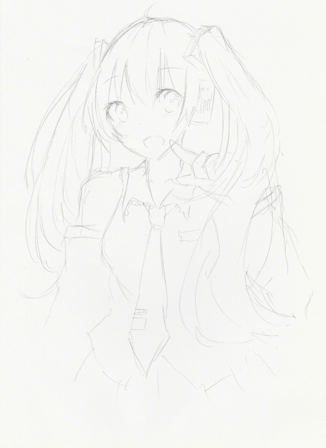
１．鉛筆で下書きをします。
あたりとかなんとかは適当で、日々の勘だけを頼りにいつも描いています。
ミクさん描くよー！
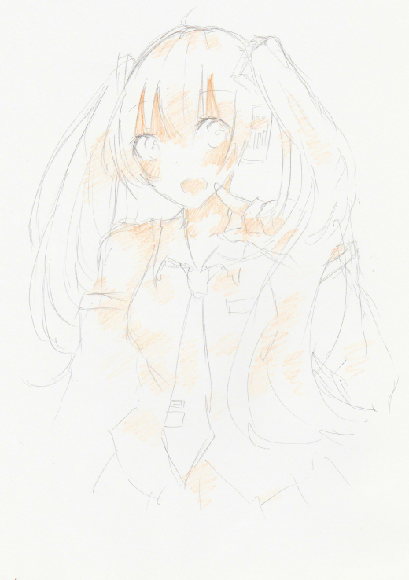
２．肌の部分と、その他の影の部分にオレンジを一色入れます。
色鉛筆を寝かしながら、強弱を意識して塗りました。肌の部分は完成図を意識して、その他のところは単なるアクセント程度にです。
オレンジがかった色を入れると、なんとなくキャラに温かみが出るので(｀・ω・´)！
個人的にほっぺのところを赤く染めるのが好きなので強調してます＼(＾o＾)／
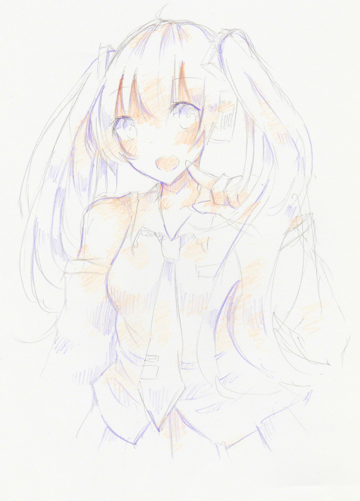
３．さらに濃いめの影の部分に紫色を一色のせます。
これも色鉛筆を寝かせながら塗りました。目の部分の影だけは丁寧に描くように塗ります。
紫色は影に使いやすいのでどうしても多用しがちな癖が＼(＾o＾)／寒色にも暖色にもどっちにも合うんだよなぁこの色。
また、2番の絵と比べてもらったら分かると思いますが、主線の影になる部分もここで紫でなぞりました。
主線を際立たせることによって絵がはっきりと映えるので、後の工程でもちょくちょく主線をなぞりつつ塗っていくかも。
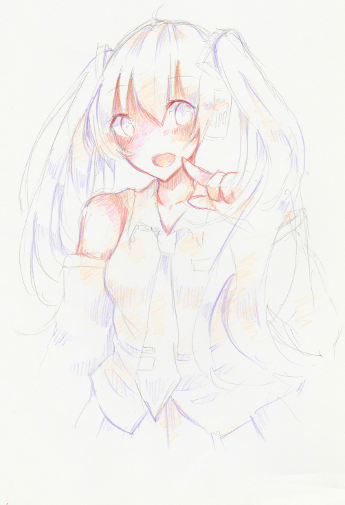
４．赤とピンクを入れてみました。
赤はほとんど線をなぞる感じで影を入れてますね。ピンクはうっすらと目立たない程度にいれました。
目の部分の線が赤みを帯びていることにお気づきでしょうか。
ミクさんは青がメインのキャラなので、完成形はどうしても冷淡になってしまいがちですが、最初にこれでもかってくらい暖色系を強調することで仕上がりがぬくぬくする、はずです、たぶん。
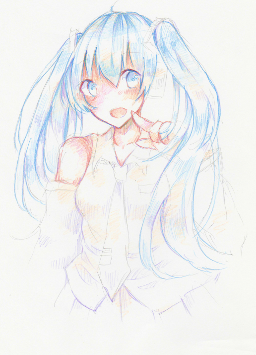
５．青を一色入れてみました。
ちなみにこの色は水色じゃなくて、ちゃんとした青なんです！
そして、自分でも一色でここまで濃淡をつけられるんだと驚きましたが、青色鉛筆1本だけで塗ってあります(∩´∀｀)∩
色鉛筆１本だけで何通りも色を表現できるので、強弱は大事です、ほんと。
色を塗り重ねていくごとに主線がどんどん目立たなくなっていくので、ここでも主線を青でなぞって再度強調していますね。
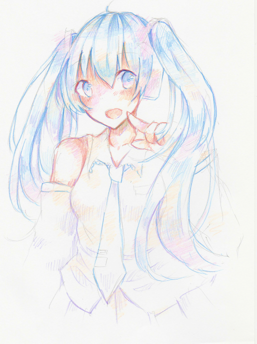
６．薄くピンクを一色塗りました。
もう変化がなさすぎて5番の絵との間違い探しのよう。でも個人的に重要な工程だと思っています！ｗｗ
まず目の下の部分にうっすらとピンクを。
そして、髪飾りと耳の機械の発光する部分を中心にピンクを、けっこう広い範囲に入れました。
「完成図ではここだけがピンクだから、ここだけその色で塗ればいいんじゃない？」って昔は思っていましたが、今は雰囲気重視で、他のパーツへもはみ出しながら色を塗るようにしています。
というか、薄い色であれば薄い色であるほど、他のパーツにはみ出る勢いで塗ったほうが綺麗な仕上がりになると思います。
その点ピンクってすげえよな。最後まで薄さたっぷりだもん。超便利。
濃い色は後で塗り重ねられるから気にせず気にせず思い切ってはみ出しまくりましょう。
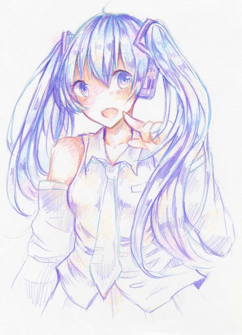
７．またまた紫を１本だけ塗り重ねています。ここからの工程は筆圧強めがいいかも。
だいぶ完成形が見えてきたように思えます。髪の毛などは描くように細かく・・・影をつけるときは塗るというよりも「描く」って感じです。
ここでも主線をこれでもかってくらい強調してなぞってあります。
目は丁寧に描き、影の部分はほとんど紫で塗りつぶす感じで。
髪飾りや耳の機械の黒い部分も塗りつぶしてみて、ピンクの色の度合いを確かめています。
紫はほんとに便利。影の色に困ったらとりあえず紫でいっかと思っているクソはこちらです('ω')
今使っている色鉛筆はクリスマスにもらったばかりの24色色鉛筆ですが（24色あるものの、ほとんどの色が未使用です・・・）、初めに削って短くなってしまったのが紫色鉛筆でした。
ちなみに中学生のときに使用していた100均（）の色鉛筆も、一番短いのが紫色でした。
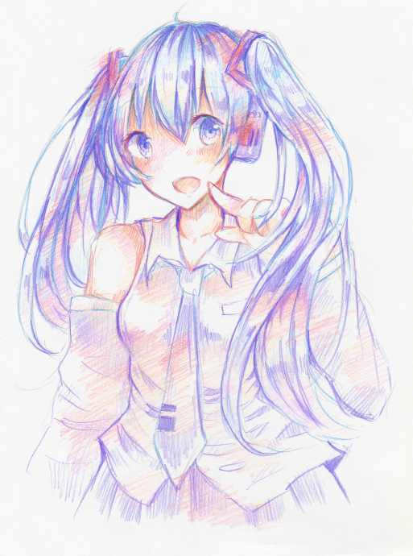
８．これでもかってくらい赤とオレンジで髪飾りを光らせました。
髪と服にも影を赤色でつけてあります。影っていうか赤っぽい空気感をささーって出した程度になるかな。温かみを意識して。
ネクタイとスカートに紫を入れ忘れたので調整がてら追加してあります。
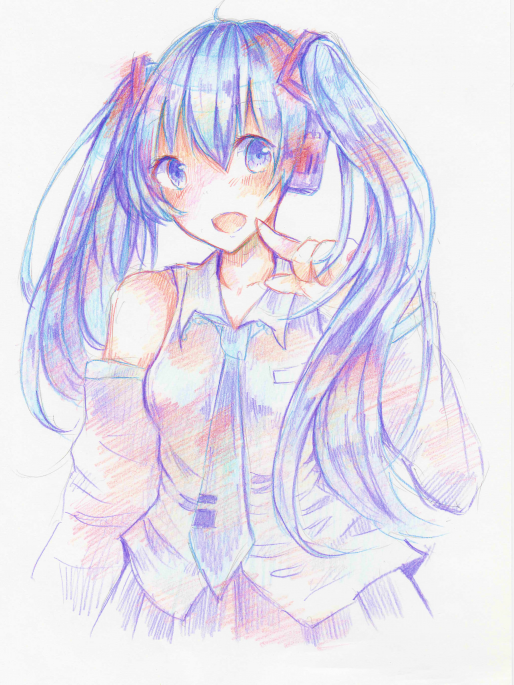
９．髪、目、ネクタイに水色を塗りました。
ここで水色の初登場です！それまで塗り重ねてきた色など気にせず上から濃いめに塗り重ねました。
髪のハイライト部分は塗りつぶしてしまわないように、白いまま残してあります。
（水色も結構薄いので、濃く塗ってもなんか変わった気がしません。が、心なしか髪の透明感が増した気がします）
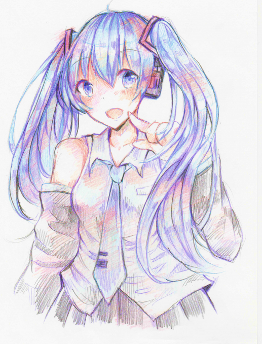
１０．ラストスパート！主線が薄いかなって思ったところや、目の濃いところや髪飾りなどに黒色を付け足します。
黒は絵にメリハリをつけるために使用しています。９の工程と比べてみても、黒を入れるだけで絵として出来上がってきた気がします。
私は「これ以上この絵に塗り重ねられる色がねーよ！」って限界を感じたときに、仕上げとして黒を入れています。
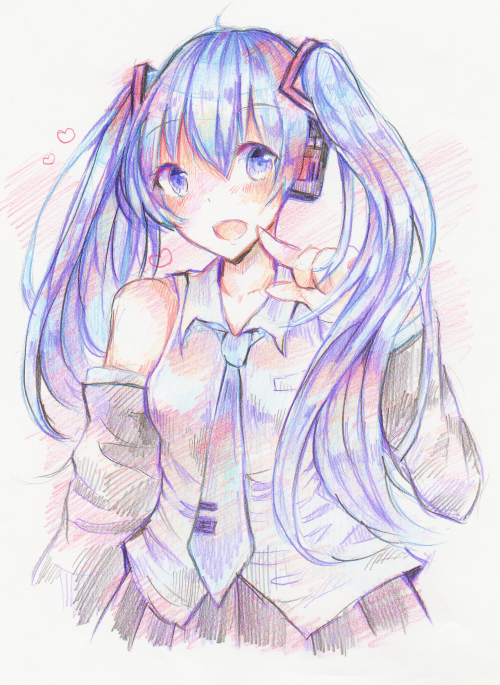
１１．背景をなんとなく薄い色で塗って、完成！
これにてメイキングは終了です、閲覧ありがとうございました～！！
☆ミクさんの服は灰色ですが、一度も灰色鉛筆を用いていないことにお気づきでしょうか。
オレンジとか紫とかだけで灰色っぽい色を表現していますが、色選びは全てフィーリングに任せているので、なんでこの色を選んだのかは自分でも分かりません。
イラスト に戻る